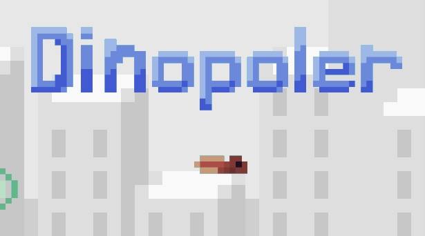
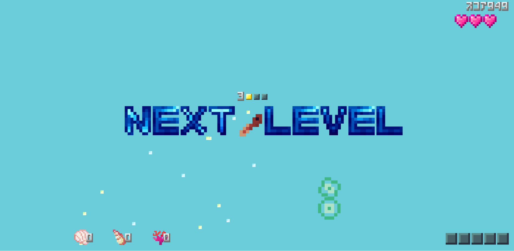

Dinopoler おたまじゃくし突進アクション
画像クリックでスタート
＊どんなゲーム？＊
おたまじゃくしが微生物に体当たりして潮だまりを生き残るゲームです。
ストーリー
海面上昇により、かつての人類の文明は完全にことつきた。それどころか地球のほとんどは海になってしまい、エベレスト山頂は唯一の島となっている。
沈みゆく地球の海でクラゲたちは驚くほど多様化した。かなり深くなった海にクラゲのみが適応し、ほかの生物はほぼ絶滅してしまった。
その中でおたまじゃくしは脊椎動物の最後の生き残りであった...。
＊操作方法＊
[W]:上へ進む
[A]:左へ進む
[S]:下へ進む
[D]:右へ進む
[Z],[Enter],[Space]:決定/突進
[Q]:ポーズ
＊Screen Shots＊※開発段階の画像です
